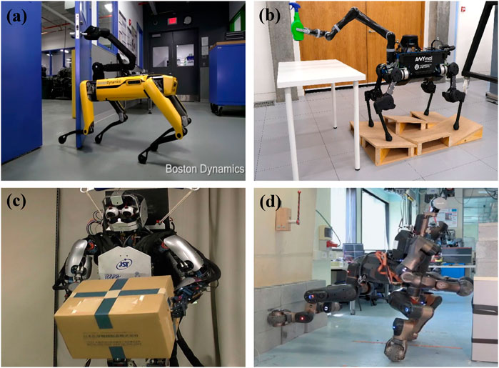

|
Aditya Bidwai I'm a research engineer at the Multi-Agent Robotic Motion (MARMot) Laboratory in the Department of Mechanical Engineering of National University of Singapore (NUS), where I research under the supervision of Prof. Dr. Guillaume Sartoretti. I completed my undergraduate degree from BITS-Pilani University, Goa Campus, India, in Electronics and Communication Engineering, in 2022. |
ResearchBroadly, I am interested in robotics and autonomy. Specifically, I am interested in the synergy between perception and planning so that robots interact with the environment with much more awareness. |
|

|
Legged robots for object manipulation: A review
Yifeng Gong*, Ge Sun*, Aditya Nair, Aditya Bidwai, Raghuram CS, Guillaume Sartoretti, Kathryn A Daltorio Frontiers in Mechanical Engineering 9, 1142421, 2023 arXiv Review of different ways in which legged robots can manipulate objects in the environment. |

|
High-Frequency Shape and Albedo from Shading using Natural Image Statistics
Jonathan T. Barron, Jitendra Malik CVPR, 2011 bibtex This paper is subsumed by SIRFS. |

|
Cleaning the USNO-B Catalog Through Automatic Detection of Optical Artifacts
Jonathan T. Barron, Christopher Stumm, David W. Hogg, Dustin Lang, Sam Roweis The Astronomical Journal, 135, 2008 We use computer vision techniques to identify and remove diffraction spikes and reflection halos in the USNO-B Catalog. In use at Astrometry.net |
Miscellanea |


{kind=link}
|
Feel free to steal this website's source code. Do not scrape the HTML from this page itself, as it includes analytics tags that you do not want on your own website — use the github code instead. Also, consider using Leonid Keselman's Jekyll fork of this page. |